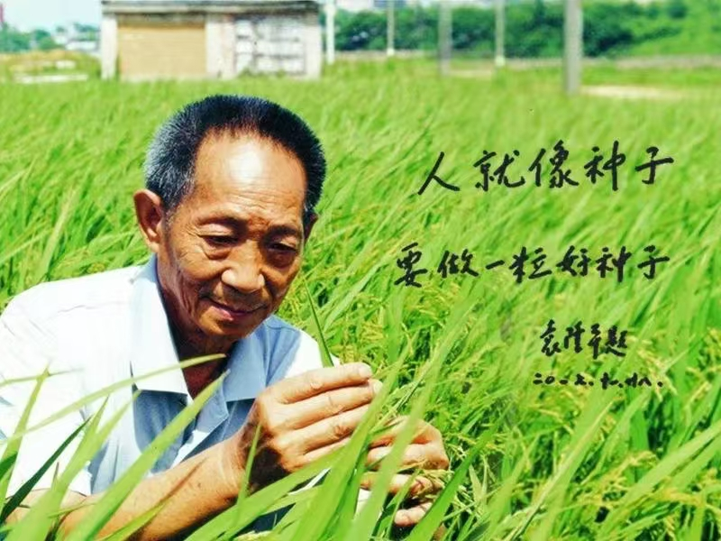

1930年9月7日,袁隆平出生于中国北京,是江西省德安县人。1953年从西南农学院毕业后,他被分配到湖南安江农校任教,从此与杂交水稻结缘。从1964年发现天然雄性不育株开始,他数十年扎根田间,把一生都献给了稻田。
袁隆平的主要贡献是发现天然雄性不育株,为杂交水稻的推广提供了基础;发明"三系法"籼型杂交水稻,成功研究出"两系法"杂交水稻,并创建了超级杂交稻技术体系,为我国粮食安全和世界农业发展作出了巨大贡献。他的主要成就包括:
袁隆平不仅在科研上硕果累累，更拥有令人敬佩的崇高精神。他的精神品质主要包括:
正如他所说:"人就像种子,要做一粒好种子。"
